Storage
The problems:
- When we turn off the computer, all contents of memory (RAM) are lost.
- Need a way to save information when the computer is restarted.
- We need some kind of secondary or external storage.
- Lots of different kinds of secondary storage, for example:
- Main factors distinguishing slow/fast storage (disk/memory): Speed and Cost
| Date | RAM | Magnetic disk
(Mechanical) | NAND SSD | Largest disk | Largest SSD |
| 04/06/2019 | about $5.00/GB | about $0.031/GB | about $0.11/GB | 16 TB ($500) | 7.6 TB ($1800) |
| 12/02/2019 | about $6.25/GB | about $0.025/GB | about $0.10/GB | 16 TB ($500) | 7.6 TB ($1500) |
| 04/15/2019 | about $5.30/GB | about $0.0375/GB | about $0.15/GB | 14 TB ($500) | 7.6 TB ($1150) |
| 11/30/2018 | about $7.50/GB | about $0.035/GB | about $0.18/GB | 14 TB ($600) | 7.6 TB ($1700) |
| 07/17/2018 | about $11.00/GB | about $0.03/GB | about $0.24/GB | 12 TB ($430) | 4 TB ($1300) |
| 04/17/2018 | about $12.50/GB | about $0.03/GB | about $0.28/GB | 12 TB ($450) | 4 TB ($1500) |
| 12/06/2017 | about $11.85/GB | about $0.04/GB | about $0.26/GB | 12 TB ($450) | 4 TB ($1500) |
| 04/12/2017 | about $6.88/GB | about $0.04/GB | about $0.31/GB | 10 TB ($370) | 4 TB ($1490) |
| 11/22/2016 | about $4.69/GB | about $0.04/GB | about $0.30/GB | 10 TB ($500) | 4 TB ($1475) |
| 07/07/2016 | about $4.75/GB | about $0.04/GB | about $0.27/GB | 10 TB ($580) | 3.8 TB ($2650) |
| 04/06/2016 | about $4.00/GB | about $0.04/GB | about $0.30/GB | 8 TB ($220) | 2 TB ($500) |
| 11/24/2015 | about $5.00/GB | about $0.035/GB | about $0.32/GB | 8 TB ($240) | 2 TB ($700) |
| 7/7/2015 | about $5.00/GB | about $0.029/GB | about $0.30/GB | 8 TB ($275*) | 1.6 TB ($1500) |
| 4/9/2015 | about $7.50/GB | about $0.035/GB | about $0.38/GB | 8 TB ($300) | 1 TB ($380) |
| 11/18/2014 | about $10.00/GB | about $0.040/GB | about $0.41/GB | 6 TB ($300) | 960 GB ($390) |
| 7/7/2014 | about $10.25/GB | about $0.040/GB | about $0.44/GB | 6 TB ($300) | 1 TB ($440) |
| 4/3/2014 | about $10.00/GB | about $0.045/GB | about $0.50/GB | 4 TB ($165) | 1 TB ($500) |
| 11/12/2013 | about $10.00/GB | about $0.050/GB | about $0.73/GB | 4 TB ($190) | 1 TB ($600) |
| 7/9/2013 | about $8.50/GB | about $0.050/GB | about $0.78/GB | 4 TB ($200) | 1 TB ($2500*) |
| 4/2/2013 | about $6.25/GB | about $0.055/GB | about $0.55/GB | 4 TB ($300) | 1 TB ($2099) |
| 11/20/2012 | about $3.50/GB | about $0.055/GB | about $0.72/GB | 4 TB ($300) | 1 TB ($2249) |
| 7/5/2012 | about $5/GB | about $0.060/GB | about $0.72/GB | 4 TB ($330) | 1 TB ($2499) |
| 7/13/2011 | about $5/GB | about $0.040/GB | about $1.66/GB | 3 TB ($160) | 1 TB ($2864) |
| 4/11/2011 | about $15/GB | about $0.045/GB | about $2.00/GB | N/A | N/A |
| 12/7/2010 | about $15/GB | about $0.060/GB | about $1.40/GB | N/A | N/A |
| 7/20/2010 | about $15/GB | about $0.060/GB | N/A | N/A | N/A |
| 4/20/2010 | about $30/GB | about $0.090/GB | N/A | N/A | N/A |
| 12/3/2009 | about $22/GB | about $0.100/GB | N/A | N/A | N/A |
| 11/25/2008 | about $16/GB | about $0.120/GB | N/A | N/A | N/A |
| 7/9/2008 | about $21/GB | about $0.160/GB | N/A | N/A | N/A |
| 4/3/2008 | about $20/GB | about $0.200/GB | N/A | N/A | N/A |
| 11/29/2007 | about $70/GB | about $0.200/GB | N/A | N/A | N/A |
All prices are from Newegg.com except *Amazon.com.
Market rates for DRAM.
- For historical comparisonshistorical comparisons (not counting the cost of inflation):
- In 1956, IBM's first hard disk, RAMDAC, was 5 MB ($50,000) at a cost of $10,000,000 per GB
- In 1980, a typical 40 MB hard drive ($1,200) had a cost of $36,000 per GB.
- In 1990, I (Mead) bought my first "big" hard drive, 200 MBs. It cost me about $1000. That's $5,000 per GB, thank you very much.
- In early 2000, drives had a cost of about $20 per GB.
- Today, hard drives cost a few pennies per GB.
For large amounts of storage, the magnetic hard drivemagnetic hard drive is still the most popular.
(inside view)
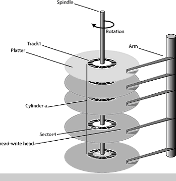
- physical size comparison of a 5.25" full-height drive and a laptop drive.
- The hard disk drive consists of several disks (platters) stacked one atop the other, rotating in sync at high speed (e.g. 3600, 5400, 5900, 7200, 10000, 15000 RPM).
- Each platter is coated with a thin magnetic film (about 1/10,000 the thickness of a piece of paper)
- For each disk there is a head that is used for reading and writing.
- Each head is attached to a disk arm (in a comb-like fashion) that positions the heads over the disks.
- The heads move in unison and not independently.
- Each disk is divided into concentric circles, called
trackstracks.
(diagram)
- Each disk has the same number of tracks.
- There are tens of thousands (or more) of tracks per inch.
- About one hundred tracks can fit in the width of a human hair.
- The collection of tracks, one from each disk, lying at the same radius is called a cylinder.
- Each track is divided into arcs, called sectorssectors.
- This the smallest addressable unit (much like a byte in the computer's memory).
- Sectors are not shared with multiple files (i.e. a sector can only contain data from one file).
- Sectors are defined by the device (hardware).
- Each sector contains the same fixed number of bytes. (e.g. legacy 512 bytes or newer advanced 4096newer advanced 4096 bytes)
- Why 4,096 bytes? Sound familiar? (NTFS/Ext3/HFS+ used for Windows, Linux, and Mac,
respectively, default
clustercluster
size as well. Nice article here.)
- Small sectors are inefficient for very large files; large sectors are wasteful for very small files.
- Large sectors can cause internal fragmentation with many small files. (External fragmentation is different.)
- The number of sectors is the limiting factor on how many files can be stored on the drive.
- Files cannot share sectors.
- An entire sector is read/written in a single disk operation. (Smallest operation)
- Modern drives use Zone Bit RecordingZone Bit Recording
(more sectors on the outer tracks) to divide tracks into zones. This allows sectors to be of different sizes.
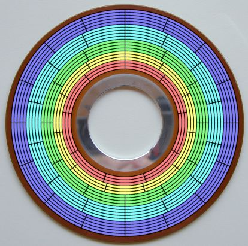

- A position on the hard disk originally specified by the disk's geometry, which is specified as a triple: (Cylinder #, Head #, Sector #,
CHSCHS)
- Here's an old Western Digital Caviar 34300. It has
8896 cylinders, 15 heads, 63 sectors per track, and 512 bytes per sector for a total of
4.3 GBs (8896 * 15 * 63 * 512 = 4,304,240,620).
- Nowadays, CHS is used only by a few devices (and utility programs).
- Operating systems use LBALBA
(Logical Block Addressing) as the interface (LBA 0, LBA 1, etc.)
- Sectors are addressed from 0 up to the number of total sectors on the drive.
- LBA can be used with other storage devices (e.g. tapes, SSDs) that don't have cylinders/heads/sectors.
- LBA is also simpler when using zone bit recording.
- Two factors affect the positioning time, that is, the amount of time it takes to access a position on the disk.
- Linear velocity vs. Angular velocity
- All sectors in all tracks experience the same angular velocityangular velocity
- Tracks on the outside of the disks move faster than the inner tracks. (linear velocity)
- Audio Compact Disks (CDs) use constant linear velocityconstant linear velocity
to keep the data access constant.
- This is fine for audio, because it is all sequential. The gradual speed changes were not noticeable.
- When burning high-speed CDs (and DVDs), there is a very noticeable speed change because disks varying their speeds during accesses. (The jet engine syndrome.)
- Now, data CDs use constant angular velocity, which means that outer tracks read/write faster than inner tracks.
- Better for random access reading (Don't have to change speed for each random sector read)
- A hard disk is connected to the computer via an I/O bus.
- Two controllers are used to transfer data between the computer and the disk.
- Disk controller - on the disk end of the bus, used to read/write date to and from the disks.
- Host controller - on the computer end of the bus
- There are also caches on the drives and/or controllers as well, to speed up access.
Disk formattingDisk formatting (low-level, hardware)
- Prior to usage, a disk must be (physically, or low-level) formatted.
- Each sector contains a data structure which stores:
- Sector number within the track
- Data area, which stores data.
- Error correcting code (ECC), a value that is computed from values in the data area to detect read/write errors.
- Stored when the data area is written
- Recomputed when the data is read, and compared with the written ECC
- Error occurs if the two values do not match
- A disk may have bad sectors - unusable, or defective sectors.
- A new disk may come with bad sectors. (bad sector map)
- A disk may develop bad sectors over its lifetime.
- Bad sectors are typically kept track of by the disk itself, and a bad sector is replaced by a spare sector (set aside by the disk, not visible to the OS).
- Sector sparing may allow for reserving one or more sectors on a track in case a sector becomes unusable.
Disk partitioningDisk partitioning and high-level formatting
- After a low-level format, the disk must be partitioned - divided up into groups of cylinders.
- Some operating systems refer to these as logical drives.
- Each partition is treated by the OS as a separate logical hard disk.
- Once the drive is partitioned (even with only 1 partition), it is ready to
have a filesystem placed on it.
- There is one filesystem per partition.
- Windows XP with 3 hard disks:
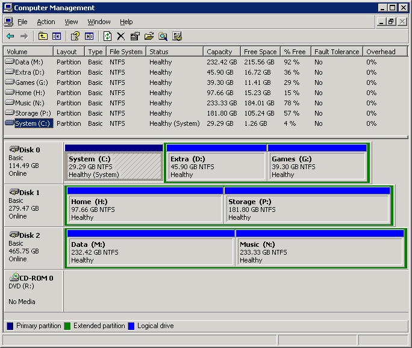
- Windows 7 with 1 hard disk:
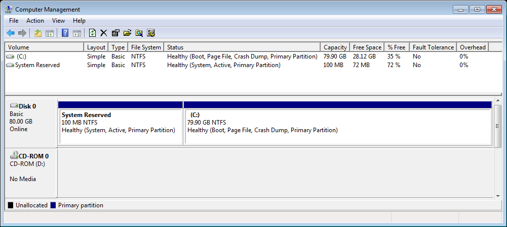
- Partition info from olga, athena, sabrina and maya
- To see the output shown in the links above, issue this command: (That's a lowercase L)
sudo fdisk -l
This will list all of the partitions from all of the disks on the system.
- Graphical view of storage on olga.
- Graphical view of storage on maya.
- Now these partitions need a logical formatting (create the file system)
- Typical uses for partitions: swap space, separate "system" and "data" partitions, different file systems, different operating systems, etc.
- Mutli-boot systems - each OS is on it's own partition.
- Each partition can use a different file system.
- Can be mounted with different attributes, e.g. read-only
- Different areas of the hard disk have better performance characteristics (e.g. the outer tracks are faster than the inner tracks)
- Swap files may reside on their own partition (different format).
- Log files or files that grow quickly. (On Unix-like systems this is the /var directory)
- Runaway programs or malicious programs only affect a single partition.
- Doesn't endanger the system partition from running out of space.
- Isolates files - if one partition gets corrupted, the others may be fine.
- There are some drawbacks:
- There is overhead that will be duplicated on each partition.
- You can't move a file between partitions, you have to copy it. (copy/delete)
- Sometimes you can't link to a file on a different partition.
- Can mount and unmount partitions as needed.
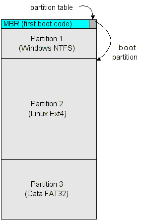
- Boot process from before.
- When several disk I/O requests are made, the OS must choose the order in which to service the requests.
- With spinning magnetic disks, disk access involves moving the disk heads.
- Solid-state disks (SSDs) don't have moving parts (discussed later).
- The farther the heads have to move, the longer the seek time.
- To maximize disk bandwidth (the data transfer rate), we want to minimize the total seek time.
- Hardware schedulers: (move scheduling from OS to disk/controller, OS still schedules I/O requests but hardware orders the requests received)
Scheduling algorithms
- First-Come First-Serve (FCFS) - schedule I/O requests in the order in which they are received.
- Simple to implement with a first-in, first-out (FIFO) queue.
- Gives poor bandwidth, in general.
- Shortest Seek Time FirstShortest Seek Time First (SSTF) - service the request that minimizes the distance the head must travel from its current position.
- May cause starvation (like SJF processor scheduling).
- However, the actual time required is known (unlike SJF, which uses some kind of heuristics to "guess").
- ScanScan algorithm (elevator algorithm)
- order the requests so that the head moves in the same direction until the end or beginning of the disk is reached
- then the movement direction is reversed.
- Circular SCAN (C-SCAN) algorithm
- service the requests so that the head always moves from disk beginning to disk end
- when the end is reached, the head is moved back to the disk beginning.
- Provides a more uniform wait time than SCAN. (With SCAN, the middle tracks will be visited twice as much as the inner/outer tracks)
- LOOKLOOK and C-LOOK - the same as the SCAN and C-SCAN algorithms, except that the head is not moved to the actual beginning or end, but rather the closest extreme among the scheduled requests.
Scheduling examples assumptions:
- Disk has 200 cylinders (0-199)
- Head currently at cylinder 53, and moving towards the inside of the disk (increasing cylinder #)
- Cylinder requests:
98, 183, 37, 122, 14, 124, 65, 67
FCFS example
- Cylinder requests: 98, 183, 37, 122, 14, 124, 65, 67
- Total head motion:
|98-53| + |183-98| + |37-183| + |122-37| + |14-122| + |124-14| + |65-124| + |67-65|
= 45 + 85 + 146 + 85 + 108 + 110 + 59 + 2
= 640 cylinders
SSTF example
- Cylinder requests: 98, 183, 37, 122, 14, 124, 65, 67
- The order of processing is
(53), 65, 67, 37, 14, 98, 122, 124, 183
Total head motion:
|65-53| + |67-65| + |37-67| + |14-37| + |98-14| + |122-98| + |124-122| + |183-124|
= 12 + 2 + 30 + 23 + 84 + 24 + 2 + 59
= 236 cylinders
SCAN example
- Cylinder requests: 98, 183, 37, 122, 14, 124, 65, 67
- Processing order
(53), 65, 67, 98, 122, 124, 183, (199), 37, 14
Total head motion:
|65-53| + |67-65| + |98-67| + |122-98| + |124-122| + |183-124| + |199-183| + |37-199| + |14-37|
= 12 + 2 + 31 + 24 + 2 + 59 + 16 + 162 + 23
= 331 cylinders
C-SCAN example
- Cylinder requests: 98, 183, 37, 122, 14, 124, 65, 67
- Processing order
(53), 65, 67, 98, 122, 124, 183, (199), (0), 14, 37
Total head motion:
|65-53| + |67-65| + |98-67| + |122-98| + |124-122| + |183-124| + |199-183| + |0-199| + |14-0| + |37-14|
= 12 + 2 + 31 + 24 + 2 + 59 + 16 + 199 + 14 + 23
= 382 cylinders
LOOK example
- Cylinder requests: 98, 183, 37, 122, 14, 124, 65, 67
- Processing order (compare with Scan example)
(53), 65, 67, 98, 122, 124, 183, 37, 14
Total head motion:
|65-53| + |67-65| + |98-67| + |122-98| + |124-122| + |183-124| + |37-183| + |14-37|
= 12 + 2 + 31 + 24 + 2 + 59 + 146 + 23
= 299 cylinders
C-LOOK example
- Cylinder requests: 98, 183, 37, 122, 14, 124, 65, 67
- Order of processing (compare with C-Scan)
(53), 65, 67, 98, 122, 124, 183, 14, 37
Total head motion:
|65-53| + |67-65| + |98-67| + |122-98| + |124-122| + |183-124| + |14-183| + |37-14|
= 12 + 2 + 31 + 24 + 2 + 59 + 169 + 23
= 322 cylinders
Points:
- The examples just accounted for seeks (which are the major factor in search times)
- Other factors such as rotational latency might need to be considered.
- The OS usually doesn't know about latency or the current positions of the heads, so the
hardware should do the scheduling.
- But, the OS may want to prioritize disk reads (e.g. paging is higher than user stuff).
- To find out which scheduling algorithm your device is using (assume sda in this example):
cat /sys/block/sda/queue/scheduler
The command lists the available schedulers with the currently active one in brackets.
On all of my Linux Mint 13 systems (SSD and hard drives) I get this:
noop deadline [cfq]
However, on my Raspberry Pi,
I run this:
cat /sys/block/mmcblk0/queue/scheduler
And I get this:
noop [deadline] cfq
My ODroid-U3
is the same as the Raspberry Pi. It seems that the default scheduler on Linux Mint 17,
is also the deadline scheduler. Linux Mint 19 seems to have gone back to cfq.
- Links for
noopnoop,
deadlinedeadline, and
cfqcfq.
- There is an older one named anticipatoryanticipatory
(to deal with "deceptive idleness") which has now been replaced by cfq.
- Most scheduling algorithms that re-order requests are variations of the Shortest-seek-time first, SCAN, and LOOK algorithms.
- Spinning hard drives have moving parts that
- are slow as seen from the CPU and memory
- wear out over time
- generate heat and noise
- are susceptible to crashes (shocks)
- A RAM diskRAM disk is a logical disk created from main memory
- Super fast as there are no moving parts, it's just memory.
- When the power is turned off, all data on the "drive" is lost.
- The memory used is no longer available to the CPU. (Great for DOS-like operating systems).
- Solid state drivesSolid state drives (SSD) are drives made from
certain types of flash memoryflash memory
- No moving parts, so they are fast, quiet, and generally cooler.
- They use a different kind of memory that persists when the power is turned off.
- DRAMDRAM-based volitile memory (battery required to retain data)
- NANDNAND-based non-volitile memory (no power needed to retain data)
- SLCSLC,
MLCMLC, and
TLC (Single, mulitple, triple, quad levels). Each cell has more than one state (voltage).
- SLC - 1 bit per cell, highest performance, most expensive, two states, 0 and 1, high tolerance for voltage flux
- MLC - 2 bits per cell, 4 states (00, 01, 10, 11)
- TLC - 3 bits per cell, slower, cheaper, 8 states (000, 001, 010, 011, 100, 101, 110, 111), lower tolerance for voltage flux
- QLC - 4 bits per cell, slowest, cheapest, 16 states (0000 ... 1111), lowest tolerance for voltage flux
- The more expensive "enterprise" level of SSD do
over-provisioningover-provisioning
to increase performance, e.g. an SSD with 128 GBs of storage is advertised as a 100 GB SSD. (The classic space-time tradeoff).
Some spinning hard-drives do this by only using the outer cylinders (for performance reasons).
Device | Read
(μs) | Program
(μs) | Erase
(μs) |
|---|
| SLC | 25 | 200-300 | 1500-2000 |
| MLC | 50 | 600-900 | ~3000 |
| TLC | ~75 | ~900-1350 | ~4500 |
- The flash drives have a special controller that translates block numbers to something the flash
memory can use (flash translation layer or FTL). It also has DRAM for storing mapping tables
for faster performance.
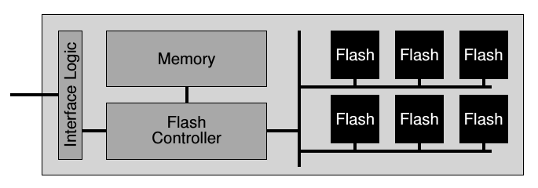
- The memory has a limited number of writes over the lifetime of the drive.
- Some drives implement wear-levelingwear-leveling
(i.e. don't reuse a cell until all others have been used).
- Number of writes are getting better/longer all the time. (i.e. warranties)
- Random writes can be made sequential (i.e. all writes can be written to same erased block).
- hybrid drivesHybrid drives
combine a hard drive and SSD in one.
- SSDs can't overwrite memory, must erase it first. (Many operating systems have a
TRIMTRIM command to free pages, a.k.a garbage collection, running in the background)
- Typically, SSDs write 4 - 8 KB pages but erase 256 - 512 KB blocks.
- This is why write speeds can be dramatically slower than read speeds.
- Unlike magnetic media, this makes it nearly impossible to "undelete" files.
- Originally, only a few operating systems (file systems) and/or SSDs provided this. Now, almost all do.
- See write amplification for more details.
- A simplified example. Suppose we want to write to the first page in the first block.
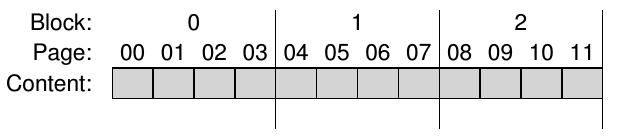
- The contents are initially invalid:
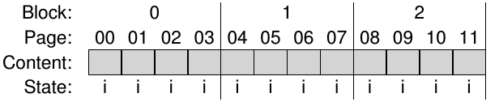
- Before we can write, we have to erase. But, you have to erase entire blocks:
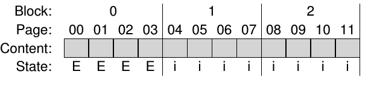
- Then you can write to the erased page:
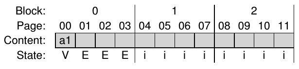
- Another simplified example. Suppose we have an entire block of valid data
and we want to overwrite the first page with new data:
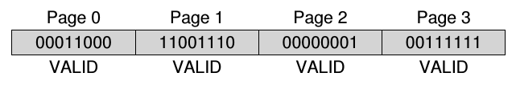
- First, we have to erase the entire block:
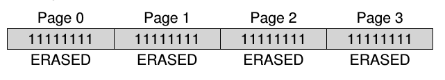
- Then we can write the new data:
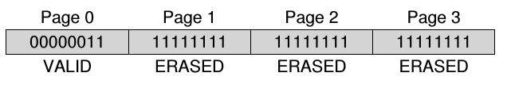
- Do you see the problem?
- Currently expensive compared to hard drives (Costs)
- Currently limited storage compared to hard drives (Sizes)
- F2FSF2FS - Flash-Friendly File System that is optimized for:
- Random access - No seek-time latency.
- Erasing blocks - Do it in the background when disk is idle.
- Distributing the writes across the disk; don't reuse the same blocks as often.
- As SSD components get cheaper, larger, and more robust, they will start to fill in for smaller hard drives.
- The most likely scenario for the next several years is for hybrid systems where the SSD sits between the hard drive and main memory (cache-like mechanism).
- Microsoft has a technology called ReadyBoostReadyBoost that does something like this.
- Putting often-accessed (especially read-only) files on an SSD is a good balance.
- Hard drives will likely be around for long-term storage and for things that don't need the speed and expense of SSDs. (e.g. large videos, music collections, game assets)
- Interesting comparisoncomparison of SSDs with hard drives.
- The SSD Tutorial - A video introduction to SSDs from Newegg TV.
- This is really good for those that want to learn more about storage hardware.
- Another video from Newegg TV showing the very popluar Samsung 830 SSD.
- Flash-based SSDs The best explanation I've ever read
from the
best operating systems book I've ever read.
- Sometimes referred to as Redundant Array of Independent Disks.
- Generally uses JBOD (Just a Bunch Of Disks).
- The concept is that you make two or more physical drives (an array) appear as a single drive.
- There are several strategies, and two primary stategies are for performance and reliability.
- Striping - This is for performance. Files (data) are split among the drives.
- Mirroring - This is for reliability. Files are duplicated (mirrored) on multiple drives.
- ParityParity - This is another form of reliability where one or more drives store parity information.
- The different schemes are divided into categories called RAID levelsRAID levels:
- RAID 0 - Block level striping. High-performance but with no additional reliabilty
built-in. Inverse reliability (the more disks, the less reliable they are). 100% disk usage.
Can also make multiple disks appear as a single larger disk.
Technically, RAID 0 is not RAID because there is no Redundancy. In fact, it is worse than just a single drive. Mead uses this one! (I'm all about speed.)
- RAID 1 - Mirroring (no parity/striping). Redundancy with minimal disks. Data is duplicated on all drives. Reliability increases with the number of disks. May have slight increase in read performance with slight decrease in write performance. Separate physical controllers can help.
- Parity uses XOR: 0 ^ 0 = 0, 0 ^ 1 = 1
- Example:
Drive 1: 1 0 1 1
Drive 2: 0 0 0 1
----------------
Parity: 1 0 1 0
- The parity bit ensures that there are an even number of 1 bits. (Contrast with odd parity)
- Works with any number of drives:
Drive 1: 1 0 1 1
Drive 2: 0 1 0 1
Drive 3: 1 1 0 1
Drive 4: 0 0 1 0
----------------
Parity: 0 0 0 1
- How parity bits workHow parity bits work
- Uncommon RAID levels:
- RAID 2 - Bit-level striping with parity.
- RAID 3 - Byte-level striping with parity.
- RAID 4 - Block-level striping with parity.
- RAID 5 - Block-level striping with distributed parity. (Possibly with a hot spare)
- RAID 6 - Block-level striping with double distributed parity. (Possibly with a hot spare)
- Parity is only calculated on writes (unless there is a failed drive.)
- Nested RAID levelsNested RAID levels:
- RAID 0+1 - There is a RAID 0 set inside a RAID 1 set. (A mirror of stripes)
- RAID 1+0 - There is a RAID 1 set inside a RAID 0 set. (A stripe of mirrors)
- There is hardware-based RAIDhardware-based RAID and
software-based RAIDsoftware-based RAID.
- Hardware:
- Uses less CPU resources as all the work is done on the controller.
- Can protect boot drive.
- OS doesn't have to know about RAID.
- If OS can't do RAID, it's OK as the hardware does all and the OS sees one big drive.
- Can't move drives to different controllers.
- Software:
- Uses CPU, but CPU performance has dramatically improved over the years and hard drives have not.
- Can move drives to another similar OS.
- Software can do advanced disk scheduling (via filesystems, e.g. ZFS and Btrfs).
- Boot drives are problematic.
- There is also fake RAIDfake RAID, which is unfortunately very prevalent.
- The OS still must understand RAID.
- Proprietary technology built into the motherboard (or cheap add-in cards).
- Useful for dual-booting different operating systems that have incompatible RAID techniques.
- A pretty good introduction to setup up a RAID system in Linux is
here.
- Finally, don't ever forget this:
!! RAID IS NOT BACKUP !!
Running a full-sized desktop computer as a simple backup server is overkill. You don't need a lot of
processor power or memory. If all you really want is some extra storage space to use as a backup,
then a NAS is the perfect way to go. Even a processor that is used in a cell phone is adequate, and you
don't even need 1 GB of memory, either.
- A NAS is a simple "mini-computer" (not like the mini-computersmini-computers of yesteryear) that provides
everything you need to handle file backups.
- Most NAS devices run Linux or a form of Linux (usually stripped down, which makes it very easy to manage).
- They generally support some type of RAID system.
(You want reliability the most, so at least RAID 1, and NEVER, EVER RAID 0!)
- Simple "home" NAS devices have as little as 256 MB of memory (yeah, MB!) and a low-powered CPU.
- Higher-end "enterprise" NAS devices can have very powerful processors and several GBs of memory.
- Some will allow external drives (USB, eSATA, etc.) to be connected.
- They have minimal connections and don't have video support so you manage them via a web browser.
- In addition to providing basic file services, most NAS devices (especially home versions) support such things as:
- Additional file services (e.g.
CIFSCIFS (SMB, Samba),
NFSNFS,
AFPAFP,
FTPFTP,
HTTPHTTP,
HTTPSHTTPS)
- Streaming services (DLNADLNA, iTunes).
- Discovery services (BonjourBonjour, UPnPUPnP)
- Photo server (a complete website for sharing photos)
- Terminal services (e.g. SSHSSH, TelnetTelnet).
- Surveillance (web/video cams).
- Mail services (POP3POP3,
SMTPSMTP,
IMAPIMAP).
- Connecting printers and sharing them with computers on the network.
- Built-in firewalls and security.
- Apps to access the backup from iPhones, iPads, Androids, etc.
- NAS devices that I've used:
- Synology DS209 - Low cost, low power, nice interface, under-powered CPU.
- Time to backup: about 25 minutes (delta on about 1,000,000 files consuming about 325 GBs of space)
- Synology DS212j - Low cost, low power, nice interface, broad support, decently powered CPU.
- Time to backup: about 6 minutes.
- Netgear ReadyNAS Pro 2 - Slightly higher cost, decent interface, more powerful CPU.
- Time to backup: about 4 minutes.
For detailed information on any command, use the man pages or Google.
- hdparm - get/set hard disk parameters (hdparm --help) especially -t, -i, -I, and --offset XGBs (e.g. sudo hdparm --offset 931 -t /dev/sda)
- A nice introduction to hdparm can be found here.
- smartctl - part of the smartmon tools (smartctl --help)
- This displays the S.M.A.R.T. (Self-Monitoring, Analysis and Reporting Technology) information from a disk.
(e.g. sudo smartctl -a /dev/sda)
- gnome-disks - A GUI for disk management
- A nice GUI to do all kinds of stuff like partitioning, formatting, and benchmarking your disks.
- Other useful disk management programs:
- lsblk - List block devices
- fdisk - Manipulate disk partition table (sudo fdisk -l to see partition info)
- iostat - Report CPU statistics and input/output statistics for devices and partitions.
- df - Report filesystem disk space usage (e.g. df -h)
- See also pydf which is a Python program like df but with additional features.
- blkid - Locate/Print block device attributes
- gparted - A GUI for manipulating partitions
- KDE Partition Manager - A GUI partition editor for KDE (the program's name is partitionmanager)
Links:

{kind=link}
{kind=link}
{kind=link}
{kind=link}
{kind=link}